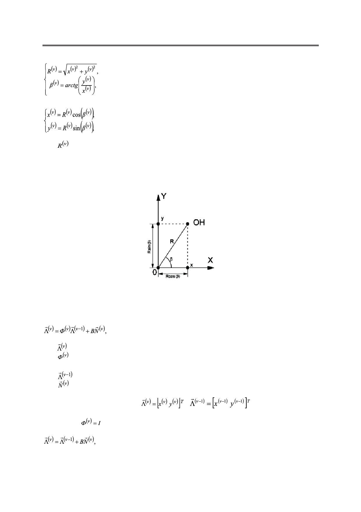

Б.А. Заикин
(2)
(3)
где – расстояние от охранной системы до объекта в ν-ый момент времени;
с – скорость распространения радиоволны.
Отметим также, что в общем случае выражение для пеленга в (2) должно зависеть
от того, в каком квадранте находится ОН. В нашем случае подразумевается, что объект
находится в первом квадранте (рис. 1).
Рис. 1. Геометрическое построение охранной однопозиционной системы.
В качестве модели передвижения объекта наблюдения нами предложена марковская
последовательность:
(4)
где – вектор состояния ОН на ν-ом интервале;
– матрица перехода от (ν–1)-го к ν-ому состоянию;
В – матрица диффузии;
– вектор состояния на предыдущем шаге;
– реализация гауссовского случайного вектора с нулевым математическим ожи-
данием и единичной дисперсией.
В рассматриваемом случае
,
.
Предположим также, что имеем дело с маломаневренным объектом (например, авто-
мобилем) и
. Отсюда получаем:
(5)
или в скалярном виде
Российский технологический журнал 2017 Том 5 № 5
15